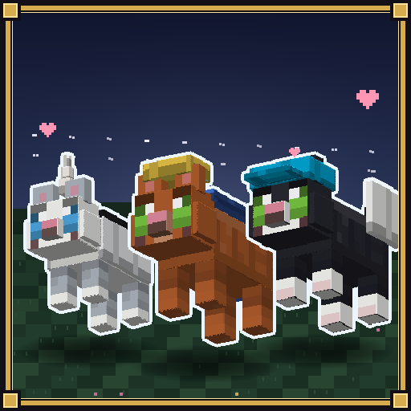
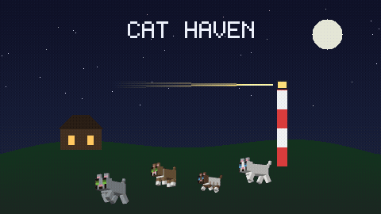
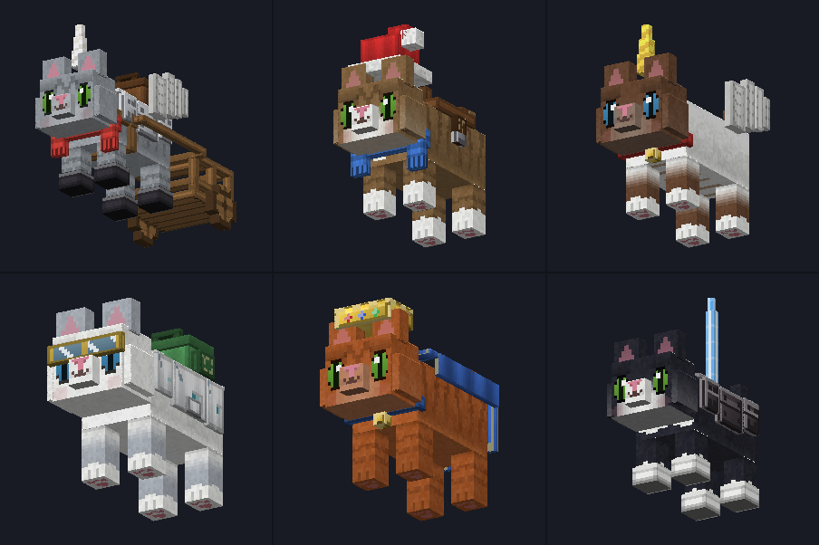
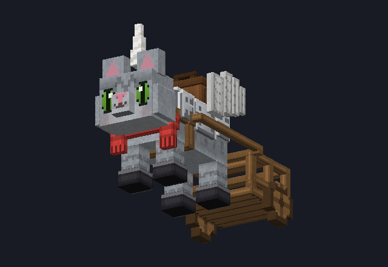
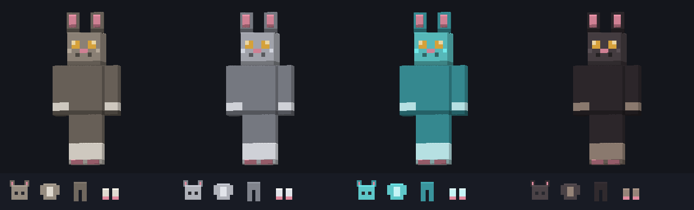

Six hand-made cats for Minecraft Bedrock
They are not reskins. Each cat has its own colouring, size, temperament and voice — modelled after real breeds: two Siberians, a Sacred Birman, a Ragdoll, a Norwegian Forest Cat and a tuxedo shorthair.
Get it on CurseForge Get it on MCPEDL
Cat Haven — a ready-made starter world, on CurseForge now. You are the shelter's new caretaker: meet the cats, ride to the lighthouse, dig up the old caretaker's savings — and find the missing cat, whose trail of white fur leads into a dark forest where pale, nameless ghost cats drift between the trees. The handbook says not to fear them. Everything ships in one file.
Get Cat Haven on CurseForge⬇ downloads and counting
⬇ Cat Haven downloads
| Cat | Breed | Look |
|---|---|---|
| Misty | Siberian | Grey tabby, green eyes |
| Hazel | Siberian | Brown-and-white tabby, white bib and paws |
| Mocha | Sacred Birman | White with brown points and white gloves — smallest and quickest |
| Snow | Ragdoll | All white, blue eyes — largest and calmest |
| Ginger | Norwegian Forest Cat | Warm ginger tabby, green eyes — lives in forests |
| Domino | European Shorthair | Tuxedo, charcoal with a white bib and paws — lives in taiga |
Each meows in its own pitch — Mocha highest, Snow deepest.
The old cats of the shelter tell of a fifth. But that is between them and the midnight sky.

Saddle · armor (up to thirty hearts in netherite!) · unicorn horn · wings · bat wings · witch hat · santa hat · doctor coat · cap · scarf · backpack · glasses · cape · booties · cart · collar · bow · crown · energy blade · star cloak — sixty colour variants, all wearable at the same time. Unicorn horn plus wings? That is a unicorn cat.

Four pieces — a hood with ears, a vest, trousers and paws — in four tiers: leather, iron, diamond and netherite. You do not re-craft it. You upgrade the piece you already wear by combining it with the metal, so the hood you made on your first day is the hood you still have in netherite.

A suit is only as strong as its weakest piece: wear leather with netherite and you get the leather bonus. Protection runs from iron-grade to a little beyond diamond.
.mcaddon file — Minecraft imports it automatically